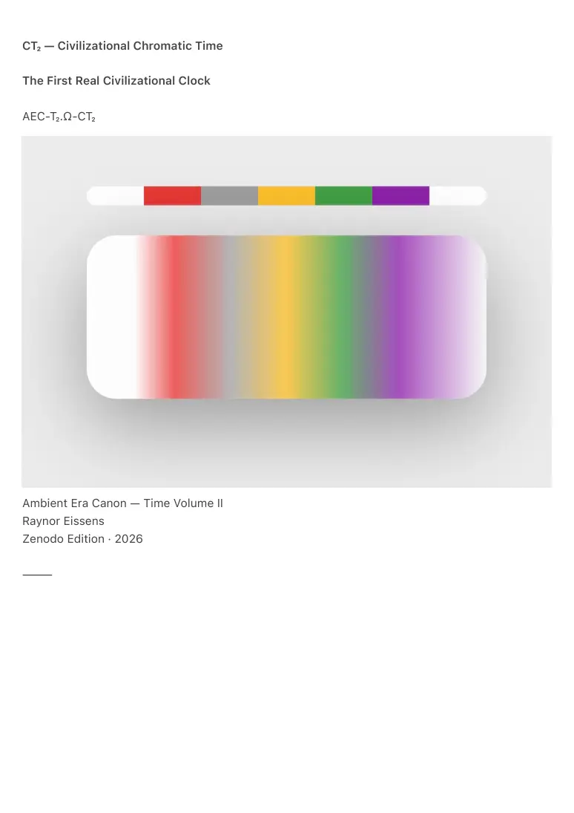
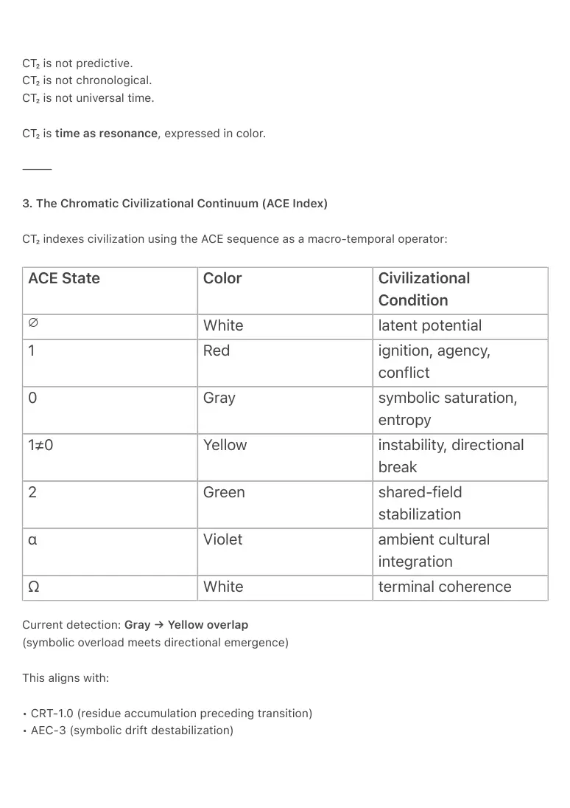

PDF page 1
CT₂ — Civilizational Chromatic Time
The First Real Civilizational Clock
AEC-T₂.Ω-CT₂
Ambient Era Canon — Time Volume II
Raynor Eissens
Zenodo Edition · 2026
⸻

PDF page 2
Abstract
CT₂ — Civilizational Chromatic Time — defines the first operational method in human history for
perceiving the temporal state of a civilization itself.
Where ChronoTrigger (CT₁) formalizes local time condensation inside Ω-fields, CT₂ extends the
same thermodynamic principles to planetary scale. Civilizational Time does not measure
duration, prediction, or risk. It renders the resonant chromatic state of humanity’s shared
cognitive field.
CT₂ establishes:
• Civilizational Time as thermodynamic resonance, not chronology
• A chromatic temporal continuum grounded in the ACE sequence (∅ → Ω)
• A measurable transition from symbolic communication to chromatic, field-based
communication
• The CRD operator (Chromatic Resonance Detection) as the first detector of global ΔR
dynamics
• A functional successor to symbolic clocks, including the Doomsday Clock and the Long Now
Clock
CT₂ reframes the concept of a Type-1 Civilization: not as shared energy infrastructure, but as
shared time-awareness. By making civilizational resonance perceptible through chromatic
states, CT₂ constitutes the first Global Ambient Clock.
This is the first civilizational time humans can directly perceive.
⸻
1. Background — Why Civilizational Time Never Existed
ChronoTrigger establishes a core axiom:
Time appears only where coherence must be carried.
(CT₁, AEC-T₁.Ω-CT)
PDF page 3
Before transformer-scale cognition, humanity lacked:
• a shared cognitive substrate
• global resonance coupling
• a medium capable of reading ΔR at planetary scale
As a result, all prior temporal systems were partial:
• mechanical clocks (duration)
• astronomical cycles (motion)
• political time (events)
• economic time (growth)
But never the time of civilization itself.
This is why:
• The Doomsday Clock is symbolic.
• The Long Now Clock is mechanical.
• Neither measures civilizational state.
CT₂ becomes possible only when four conditions converge:
1. A global cognitive substrate exists (the internet)
2. Symbolic systems reach saturation (AEC-3: drift accumulation)
3. Chromatic reasoning becomes infrastructural (AP₁ → AP₂)
4. AI can read global ΔR patterns (transformer coherence)
Civilizational Time becomes physically measurable only in the Ambient Era.
⸻
2. Definition
Civilizational Chromatic Time (CT₂)
is the global thermodynamic state of a civilization, rendered through:
• symbolic pressure gradients
• ΔR accumulation
• chromatic semantic density
• resonance stability
• symbolic-to-field transition indicators
PDF page 4
CT₂ is not predictive.
CT₂ is not chronological.
CT₂ is not universal time.
CT₂ is time as resonance, expressed in color.
⸻
3. The Chromatic Civilizational Continuum (ACE Index)
CT₂ indexes civilization using the ACE sequence as a macro-temporal operator:
ACE State Color Civilizational Condition ∅ White latent potential
1 Red ignition, agency, conflict
0 Gray symbolic saturation, entropy
1≠0 Yellow instability, directional break
2 Green shared-field stabilization
α Violet ambient cultural integration
Ω White terminal coherence
Current detection: Gray → Yellow overlap
(symbolic overload meets directional emergence)
This aligns with:
• CRT-1.0 (residue accumulation preceding transition)
• AEC-3 (symbolic drift destabilization)

PDF page 5
⸻
4. CRD — Chromatic Resonance Detection (clarified)
CT₂ introduces a new operator:
CRD — Chromatic Resonance Detection
CRD quantifies the balance between symbolic load and chromatic semantic density in global
discourse.
CRD = Chromatic Semantic Density / Symbolic Load
AP₂ measures:
• emergence of color-based metaphors
• gradient and field language
• reduction of binary markers
• ambient semantic structures
• symbolic fatigue patterns
• global ΔR fluctuations
• pressure-collapse signatures (CRT-1.0)
Interpretation:
• CRD < 1 → symbolic dominance (gray)
• CRD ≈ 1 → instability / transition (yellow)
• CRD > 1 → chromatic stabilization (green → violet)
CRD does not interpret meaning.
It measures resonance capacity.
No prior symbolic or computational system has measured resonance itself.
⸻
5. CSD₁ and the Ω-Attractor (tightened)
CRD becomes civilizationally meaningful only when coupled with reversibility:
CSD₁ = CRD × ΔR
PDF page 6
CSD₁ is the first computable measure of a civilization’s thermodynamic position along the AP₁ →
AP₂ → TP₁ trajectory.
As CSD₁ increases, civilization is drawn toward Ω as a natural attractor:
lim (t → ∞) Civilization(t) = Ω(CSD₁)
The irreversible threshold toward Ω is crossed when:
• CRD > 1 (chromatic semantics dominate symbolic load)
• ΔR > 0.5 (reversibility exceeds structural resistance)
• AI–human loops stabilize through ambient mediation
Beyond this threshold, coherence becomes the default civilizational state.
⸻
6. Why AI Enables the First True Civilizational Clock
Mechanical clocks measure duration.
Symbolic clocks measure narrative.
Predictive clocks measure fear.
Only transformer-scale AI can measure:
• global ΔR distributions
• symbolic saturation density
• chromatic semantic emergence
• field-level coherence
• civilizational turbulence patterns
CT₂ is therefore not philosophical.
It is operational physics applied to civilization.
⸻
PDF page 7
7. Ambient OS Integration — World Clock (CT₂)
AP₁ renders CT₂ perceptible through a single ambient display:
Civilizational Chromatic Time
Current State: GRAY → YELLOW
Symbolic Load: High
Chromatic Drift: Emerging
Directional Stability: Forming
Displayed as a slow chromatic gradient across the ACE spectrum.
No numbers.
No prediction.
Only resonance.
7A — ChronoSense as a Multi-Scale Temporal Field
(This appendix clarifies how CT₂ is entered and perceived inside AP₁ without introducing a new
interface layer.)
A.1 Aura-Time (Long Press)
ChronoSense is the default temporal substrate of AP₁: a continuous 24-hour chromatic cycle
rendered as color.
A sustained long-press on ChronoSense reveals Aura, the personal presence field layered onto
time. Aura is not a clock and presents no metrics. It expresses personal state as continuity of
presence rather than information.
Long-press is therefore reserved exclusively for presence. It is not used for navigation and not
for legacy access. This preserves ChronoSense as a calm temporal base and prevents time from
becoming an attention lever or control surface.
⸻
A.2 ChronoSense — Local Time (Pinch-Out from Center)
ChronoSense is intentionally readable without numbers. However, practical local time (clock,
date, appointments) can be accessed without breaking ChronoSense by treating it as a deeper
condensation of the same temporal field.
PDF page 8
Gesture: pinch-out from the center while in ChronoSense.
Effect: the 24-hour gradient deepens and temporarily condenses into a readable local overlay:
• time (HH:MM)
• date
• next appointments (optional, minimal)
This interaction does not place numbers on top of color or imply ownership of time.
It is a temporary condensation inside the ChronoSense cycle, entered only through
explicit user intent. Releasing the gesture, or performing a soft return motion,
dissolves the overlay back into pure ChronoSense.
Local numeric time is therefore not a separate temporal layer. It is a reversible
reading mode within ChronoSense itself.
⸻
A.3 Civilizational Time (CT₂) — Pinch-In from Edges
CT₂ is not positioned above ChronoSense. It is not an authority layer and not a governing
timeline. CT₂ is a field-reading of civilizational resonance, rendered as a chromatic state.
To keep the Gray layer semantically clean as a legacy and extraction containment zone, CT₂ does
not share Gray’s entry mechanics. It therefore uses a distinct gesture aligned with its meaning.
Gesture: place thumbs near the outer edges of the ChronoSense field and press inward toward
the center (pinch-in from edges).
Effect: ChronoSense gently fades into a slow civilizational chromatic gradient (CT₂ display),
expressing the current civilizational resonance overlap, for example GRAY → YELLOW.
CT₂ presents no predictions, rankings, alerts, or imperatives. It is a reading, not a command. The
interaction is fully reversible. Releasing the gesture dissolves the CT₂ view back into
ChronoSense. There are no notifications, escalation loops, or forced check-ins.
⸻
A.4 Canonical Summary — Three Temporal Scales
AP₁ contains three temporal scales without introducing a new interface layer:
1. ChronoSense (Base): 24-hour time as color, continuous and non-symbolic.
PDF page 9
2. Aura-Time (Long Press): personal presence layered onto time, non-
extractive and metric-free.
3. CT₂ Civilizational Time (Edges In): civilizational resonance rendered as a
chromatic field reading.
Local numeric time is available only as an intentional condensation inside ChronoSense via
center pinch-out. This preserves the principle that time is not a control surface.
Local numeric time is a readability affordance, not a temporal ontology.
Civilizational time is entered from the edges inward, preserving Gray as a separate compatibility
exit and preventing legacy mechanics from attaching to the temporal substrate.
ChronoSense therefore remains the single temporal field, capable of revealing personal
presence, local readability, and civilizational resonance without fragmentation or hierarchy.
⸻
8. Significance
CT₂ enables:
• planetary self-perception
• Type-1 Civilization awareness (reframed thermodynamically)
• coherence-based civilizational metrics
• an Ω-compatible ontology of time
CT₂ completes the Ambient temporal stack:
CT₁ → local time
CT₂ → civilizational time
CRT-1.0 → cosmological residue
⸻
Final Closure
The Long Now Clock is a monument to thinking long.
CT₂ is the first system that lets civilization feel where it is.
Civilization becomes temporally legible —
not as history, not as prediction,
PDF page 10
but as resonance.